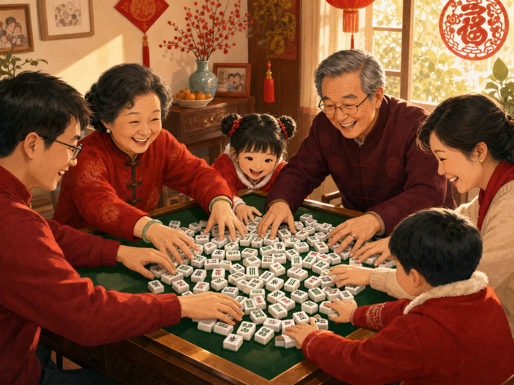
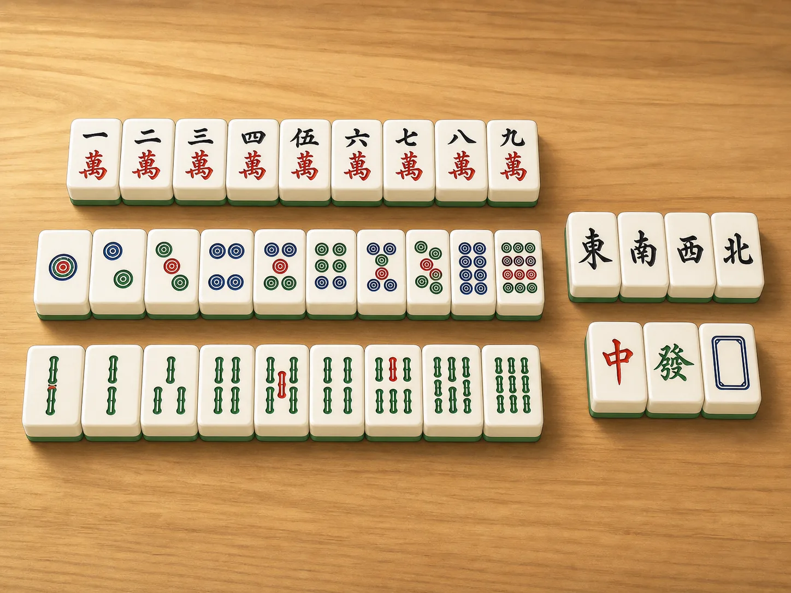
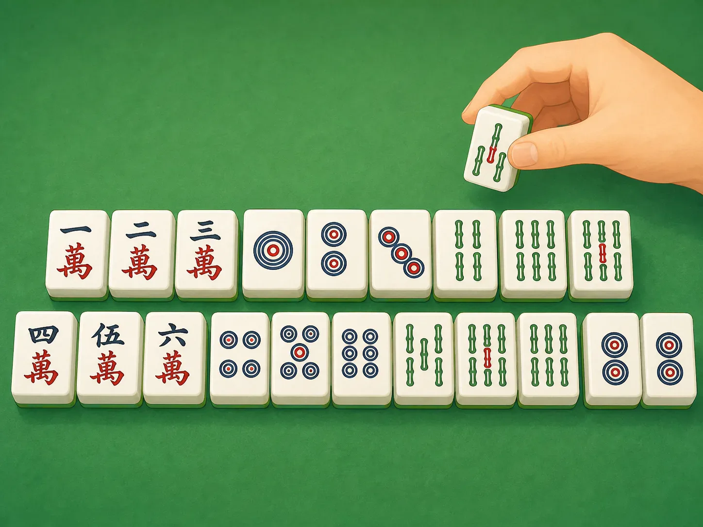

麻将：一桌子哗啦啦的热闹
Mahjong: A Lively Table Full of Tiles
Page 1
过年时，很多家里都会响起“哗啦啦”
At New Year, Many Homes Fill with Click-Clack Sounds

Even before the game starts, the sound of mixing the tiles already makes the room feel lively.
过年的时候，很多华人家庭里都会出现一种很特别的声音：哗啦啦，哗啦啦，一大堆麻将牌在桌上推来推去。
然后有人把牌码好，有人伸手摸牌，有人笑着说“这一把看我运气怎么样”。还没正式开打，桌边的气氛就已经热起来了。
所以很多人一提到麻将，先想到的不是规则，而是声音，是笑声，也是家人朋友围坐在一起的那种热闹。
At Lunar New Year, many Chinese families fill with a very special sound: click-clack, click-clack, as a pile of mahjong tiles slides across the table.
Then someone stacks the tiles. Someone draws the first tile. Someone laughs and says, "Let's see what luck I get this round." The game has barely begun, and the table already feels full of energy.
That is why, when many people think of mahjong, they do not think first about rules. They think about the sound, the laughter, and the feeling of family and friends sitting together.
Page 2
这些牌里，藏着钱、风和颜色
The Tiles Hold Money, Wind, and Color

Number tiles, wind tiles, and red, green, and white tiles make mahjong look like a tiny world on the table.
麻将牌不是一模一样的。最常见的有三大类：万、筒、条。它们都从一排到九。还有东南西北四种风牌，以及中、发、白这三种特别的牌。
很多人觉得，麻将牌里藏着老中国的影子。筒像圆圆的钱，条像一串串细长的竹子，万让人想到数字和算钱。
所以你低头看一桌麻将时，会觉得自己像在看一个小小的世界。里面有数字，有方向，也有颜色。
Mahjong tiles are not all the same. The most common ones come in three big groups: characters, circles, and bamboo. Each group runs from one to nine. Then there are the four wind tiles, plus three special tiles: red, green, and white.
Many people feel that mahjong still carries a little of old China inside it. The circle tiles can remind people of coins. The bamboo tiles look long and slim. The character tiles make people think of counting money.
So when you look down at a mahjong table, it can feel like a tiny world. There are numbers, directions, and colors all gathered in one place.
Page 3
摸一张，打一张，慢慢把牌凑齐
Draw One, Drop One, and Slowly Build a Hand

A common mahjong goal is to build several neat groups and finish with one pair.
麻将最基本的节奏其实很简单：摸一张，打一张。每个人都在一边留牌，一边等自己需要的那一张。
很多打法里，大家要把牌慢慢凑成几组，再加上一对。你可能前面一直不顺，可下一张牌一摸上来，整手牌忽然就活了。
这也是麻将迷人的地方。它不是只靠运气，也不是只靠记忆。你要看牌，要等牌，也要猜别人在等什么牌。
The basic rhythm of mahjong is simple: draw one tile, then discard one tile. Each player is keeping some tiles and letting others go, all while waiting for the right piece to arrive.
In many versions of the game, the goal is to build a few tidy groups and finish with one pair. You may feel stuck for a long time, and then one new tile suddenly makes the whole hand come alive.
That is part of mahjong's charm. It is not only luck, and it is not only memory. You watch the tiles, wait for chances, and try to guess what the other players are hoping for too.
Page 4
它不只是游戏，也是一种一起坐下来的理由
It Is Also a Reason to Sit Down Together
有些人喜欢麻将，是因为它好玩；有些人喜欢，是因为它总能把人聚到一张桌子旁边。桌上有人算牌，有人开玩笑，有人嘴里说“这把不行了”，下一分钟却又高兴得拍桌子。
后来，麻将也跟着华人走到了很多地方。今天在中国、美国、日本和别的地方，都有人打麻将。规则不一定完全一样，可那种围桌而坐、边动脑边说笑的感觉，还是很像。
Some people love mahjong because the game itself is fun. Some love it because it gives everyone a reason to gather around one table. One person is counting tiles. One person is teasing a friend. One person says, "This hand is hopeless," and then cheers a minute later.
Later, mahjong traveled with Chinese communities to many other places. Today, people play it in China, the United States, Japan, and beyond. The rules are not always exactly the same, but the feeling is often similar: people sitting together, thinking hard, and laughing at the same time.
小结
In Summary
麻将最特别的地方，不只是牌多、声音响，而是它把运气、观察和热闹都放进了一张桌子里。
所以很多人喜欢麻将，不只是因为想赢，也因为那一桌哗啦啦的声音，很像一家人团圆时的背景音乐。
What makes mahjong special is not only the pile of tiles or the loud sound. It is the way luck, careful watching, and lively table talk all fit into one game.
That is why so many people enjoy mahjong. Not only because they want to win, but because the click-clack of the tiles sounds a little like family gathering itself.